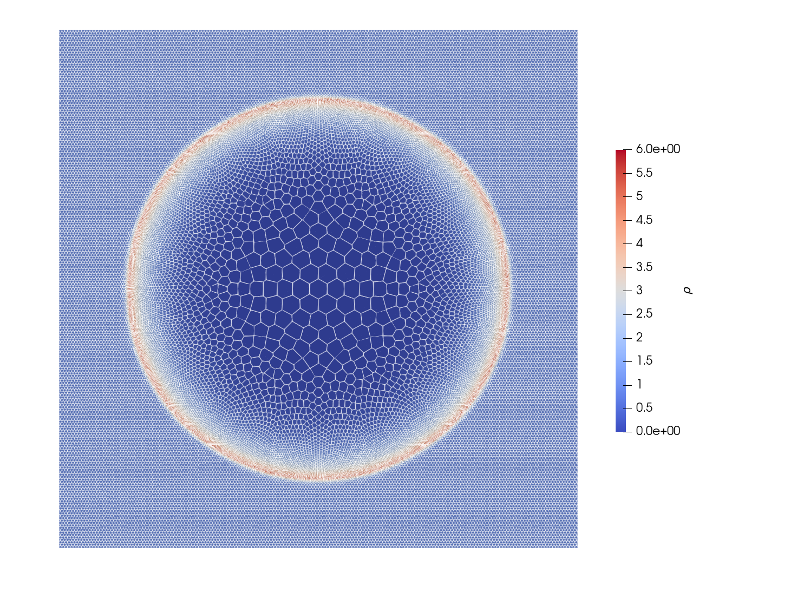

Example 3: Sedov Blast
The Sedov Blast was invented in 1940s as a mathematical model of nuclear explosion. The setup is very simple: initialize a large amount of energy concentrated in a small volume and see how it expands in all directions faster than speed of sound. One has a semi-analytical solution for this problem which you can find from Rankine-Hugeniot jump conditions. (The solution is not analaytic per se because you still need to solve an ODE numerically.) There is a nice book about the subject.
module sedov
include("../src/LagrangianVoronoi.jl")
using .LagrangianVoronoi, WriteVTK, LinearAlgebra
using LaTeXStrings, DataFrames, CSV, Plots, MeasuresDefine constant parameters. Changing them will alter the result and you will no longer get agreement with the reference. Use examples/reference/sedov.jl to generate a reference for different setup. An interesting aspect of the dynamics is that large density in the wake is followed by near vacuum around the ground zero. The adiabatic index gamma is connected to the peak density by
$\frac{\rho_\mathrm{max}}{\rho_0} = \frac{\gamma + 1}{\gamma - 1}$`
so for $\gamma = 1.4$ and $\rho_0 = 1$, the density near the blast wave will jump from 1 to 6.
In the mathematical dream world, the process begins with a singularity of energy at $t=0$. But this is impossible to do numerically (and physically as well). Thus, we initially prescribe a small radius r_bomb of energy E_bomb. To be consistent with the analytical solution, we start our clock with t = t_bomb, where t_bomb is determined from a mathematical formula below.
const rho0 = 1.0
const xlims = (-1.0, 1.0)
const ylims = (-1.0, 1.0)
const N = 50 # resolution
const dr = 1.0/N
const nframes = 100
const gamma = 1.4
const P0 = 1e-8 # the background pressure (should be close to 0)
const c0 = sqrt(gamma*P0/rho0) # sound speed
const r_bomb = 0.05 # the initial blast radius
const E_bomb = 0.3 # yeild energy of the bomb
const t_bomb = sqrt(rho0/E_bomb*r_bomb^5) # the initial time of the simulation
const t_end = 1.0
const CFL = 0.1
const export_path = "results/sedov"
function ic!(p::VoronoiPolygon)
p.rho = rho0
p.mass = p.rho*area(p)
p.P = P0
p.e = 0.5*norm_squared(p.v) + p.P/(p.rho*(gamma - 1.0))
endThis function detonates the bomb by assigning huge over-pressure to all cells withing the radius r_bomb.
function detonate_bomb!(grid::VoronoiGrid)
A_bomb = 0.0
for p in grid.polygons
r = norm(p.x)
if r < r_bomb
A_bomb += area(p)
end
end
P_bomb = (gamma-1.0)*E_bomb/A_bomb
for p in grid.polygons
r = norm(p.x)
if r < r_bomb
p.P = P_bomb
p.e = 0.5*norm_squared(p.v) + p.P/(p.rho*(gamma - 1.0))
end
end
endThis time, we shall use variable time step. It should be smallest in the inital phase of the simulation when the blast travels at huge speed. For that reason, we include time global variable t and we shall write our own time-marching loop.
mutable struct Simulation <: SimulationWorkspace
grid::GridNS
solver::PressureSolver
E::Float64
S::Float64
t::Float64
Simulation() = begin
domain = Rectangle(xlims = xlims, ylims = ylims)
grid = GridNS(domain, dr)
populate_hex!(grid, ic! = ic!)
detonate_bomb!(grid)
solver = PressureSolver(grid)
return new(grid, solver, 0.0, 0.0, t_bomb)
end
end
function step!(sim::Simulation)
v_shock = 0.4*sim.t^(-0.6)*(E_bomb/rho0)^0.2
dt = CFL*dr/(sqrt(6.0)*v_shock)
move!(sim.grid, dt)
ideal_eos!(sim.grid, gamma; Pmin = P0)
find_pressure!(sim.solver, dt)
pressure_step!(sim.grid, dt)
find_D!(sim.grid)
viscous_step!(sim.grid, dt)
find_dv!(sim.grid, dt)
relaxation_step!(sim.grid, dt)
sim.t += dt
return
endLet us plot the total energy and entropy.
function postproc!(sim::Simulation)
sim.E = 0.0
sim.S = 0.0
for p in sim.grid.polygons
sim.E += p.mass*p.e
sim.S += p.mass*log(abs(p.P/abs(p.rho)^gamma))
end
println("t = $(sim.t)")
println("energy = $(sim.E)")
println("entropy = $(sim.S)")
println()
endWe write our own time-marching loop and handle the file export manually. Once the simulation ends, we plot the density profile along the radial line and compare with the refence solution.
function main()
if !ispath(export_path)
mkpath(export_path)
@info "created a new path: $(export_path)"
end
pvd_c = paraview_collection(joinpath(export_path, "cells.pvd"))
pvd_p = paraview_collection(joinpath(export_path, "points.pvd"))
nframe = 0
sim = Simulation()
milestones = collect(range(t_end, t_bomb, nframes)) # save the data here
vtp_vars = (:rho, :v, :e, :P)
while sim.t < t_end
step!(sim)
if sim.t > milestones[end]
@show sim.t
postproc!(sim)
println()
filename= joinpath(export_path, "cframe$(nframe).vtp")
pvd_c[sim.t] = export_grid(sim.grid, filename, vtp_vars...)
filename= joinpath(export_path, "pframe$(nframe).vtp")
pvd_p[sim.t] = export_points(sim.grid, filename, vtp_vars...)
pop!(milestones)
nframe += 1
end
end
vtk_save(pvd_c)
vtk_save(pvd_p)
x = Float64[]
rho = Float64[]
for p in sim.grid.polygons
push!(x, norm(p.x))
push!(rho, p.rho)
end
csv_data = DataFrame(x=x, rho=rho)
CSV.write(string(export_path, "/linedata.csv"), csv_data)
plotdata()
end
function plotdata()
csv_data = CSV.read(string(export_path, "/linedata.csv"), DataFrame)
csv_ref = CSV.read("reference/sedov.csv", DataFrame)
plt = scatter(
csv_data.x,
csv_data.rho,
xlabel = L"x",
ylabel = L"rho",
label = "density",
color = :red,
markeralpha = 0.5,
bottom_margin = 5mm,
markersize = 1,
markerstrokewidth=0,
)
plot!(
plt,
csv_ref.r,
csv_ref.rho,
label = "analytic",
color = :blue,
linewidth = 2
)
savefig(plt, string(export_path, "/density.pdf"))
return
end
if abspath(PROGRAM_FILE) == @__FILE__
main()
end
endThis page was generated using Literate.jl.